En este artículo, cubrimos los conceptos básicos de HTML. Para empezar, este artículo define elementos,
atributos y todos los demás términos importantes que puedas haber escuchado.
Aprenderás cómo se estructuran los elementos HTML, cómo se estructura una página HTML típica y otras
características importantes del lenguaje básico. ¡En el camino, también tendrás la oportunidad de jugar con
HTML!
¿Qué es HTML?
HTML (HyperText Markup Language, por sus siglas en inglés) es un lenguaje de marcado que indica a los
navegadores web cómo estructurar las páginas web que visita. Puede ser tan complicado o tan simple como
el desarrollador web quiera que sea. HTML consiste en una serie de elementos, que utiliza para encerrar,
envolver o marcar diferentes partes del contenido para que aparezca o actúe de cierta manera. Las
etiquetas pueden convertir el contenido en un hipervínculo para conectarse a otra página, poner palabras
en cursiva, etc.
El lenguaje HTML nos da la oportunidad de tener una estructura lógica dentro de una web, tanto para
máquinas como para seres humanos. Esto se logra por medio de una especie de árbol donde hay elemento que
se ve como raíz y las etiquetas que se van insertando como si fueran las ramas. Lo mejor es que para
crear un documento HTML sólo es necesario un editor de texto. El propio editor de notas es
suficiente.Conocer HTML definitivamente es indispensable para el desarrollo de una página web. Por eso,
para crear nuestro propio sitio, es necesario contar con un desarrollador web.
Como cualquier lengua, el HTML cuenta con una gramática propia, por decirlo de algún modo. Hay una serie
de normas que regulan las etiquetas que se deben utilizar y cómo emplearlas. También indican su
significado y la relación que tienen entre ellas. En esta entrada te vamos a contar la historia y
principales características del HTML.
características del HTML
Una de las características de HTML es la forma en que se divide la información. Esto es por medio de dos
grandes bloques: el elemento HTML o head y el cuerpo o contenido.
En el elemento HTML se pueden incluir los siguientes casos:
Meta datos. Esta puede ser información que le dé contexto a la página. Por ejemplo, nos sirve para
indicar el idioma.
Referencia a ficheros. Aquí deben ir todos aquellos recursos que requiera nuestro sitio. Un ejemplo
puede ser JavaScript y archivos CSS.
Scripts y estilos. En caso de que estos no sean incluidos en un fichero independiente se pueden
incluir en la cabecera.
Por su parte, en el cuerpo está todo el contenido de nuestra página. Es decir, desde el texto, imágenes,
videos e incluso enlaces. Lo importante aquí es que todos estos elementos deben estar estructurados en
secciones y marcado de forma correcta.
¿CUÁL ES LA FUNCIÓN DE HTML?
El HTML es utilizado para desarrollos web y la creación de sitios. Este se compone de ciertas etiquetas
como hipervínculos, saltos de página y etiquetas de imágenes. Es ideal para utilizarlo en diferentes
CMS, este debe ser elegido dependiendo las necesidades de la página, por ejemplo: Wix vs WordPress.
Historia HTML
La historia del HTML empieza en 1989 cuando el investigador Tim Berners-Lee lo inventa con el fin de
compartir artículos científicos. La primera versión sólo contaba con 18 etiquetas para texto. Lo que lo
hacía especial es que podía ligar varios documentos con el hipertexto. Todo esto se podía visualizar en un
navegador llamado World Wide Web.
Posteriormente surge el Internet Engineering Task Force. Esto se volvió tan relevante que surgió el World
Wide Web Consortium (W3C) en 1993, un organismo que determinó las reglas para el HTML. En 1996 llegó la
versión HTML 3.2 la cual ha sido una de las más completas y que ha marcado la historia del HTML hasta
nuestros días.
Es importante mencionar que en este tiempo se utilizaba un navegador de nombre NSCA Mosaic. Posteriormente
se lanzó la primera versión de Netscape, quien en unos cuantos meses era usado por la mayoría de los
usuarios en internet.
En la evolución de internet jugaron un papel fundamental otros lenguajes de programación. La introducción de
Java o JavaScript dio más forma a la segunda versión de HTML. Gracias a este lenguaje se podían implementar
tablas, imágenes, tipografías e incluso colores. Posteriormente surgió el CSS (hojas de estilo en cascada)
con el que se da estilo y forma a los textos.
En la tercera versión de HTML se incluyen las etiquetas específicas para los navegadores web como Internet
Explorer. Sin embargo, esta decisión sólo causó caos y problemas.
Por esta razón se decidió hacer un cambio hacia un estándar único. En esta nueva versión se incluyeron
etiquetas como (<a>, <style>, <java> y <DIV>). Es así que en la versión HTML 4.0 se
agregan los botones y el iFrame para poder tener sitios dentro de otros sitios. En 2014 se desarrolló la
quinta versión de HTML. Esta actualización llegó con un sin fin de audios, vídeos e inputs.
Editores de HTML.
Todos cometemos errores y esto también aplica a la escritura de código. Tanto si eres un principiante como un
experimentado en el tema, cometer un error en tu código puede causarte un verdadero dolor de cabeza. Así
como utilizamos todo tipo de herramientas para ayudarnos con tareas sencillas, como la corrección
ortográfica al escribir, un editor HTML (Lenguaje de marcado de hipertexto, por sus siglas en inglés) te
ayuda a enmendar los errores que se cometen al escribir código. Pero antes debemos conocer que es un
editor de HTML?
¿Que es un editor de HTML?
un editor de HTML se utiliza para escribir la base de un sitio web. Si bien cualquier editor de textos
puede hacer este trabajo, no significa que tengas que hacerlo sin ningún tipo de ayuda. Las funciones
adicionales, la comprobación de errores y un editor más intuitivo en general pueden facilitarte la vida
significativamente a la hora de escribir código y optimizar tu proceso de desarrollo web.
El texto que utiliza un editor de HTML también se puede traducir a otros lenguajes, como CSS, XML o
JavaScript. Pero como sabemos, no todas las cosas están hechas de la misma manera. Algunos editores
pueden ser más fáciles de usar, mientras que otros brindan mayor funcionalidad.
¿Porque deberias usarlo?
La respuesta corta es siempre. Un editor de HTML es invaluable tanto para principiantes como para
desarrolladores más avanzados. Ya mencionamos algunas de las características básicas de los editores de
HTML, como el resaltado de sintaxis, la inserción de elementos HTML comunes y el autocompletado.
Todo esto asegura que tu código sea funcional y limpio con el menor esfuerzo, permitiendo que sea mucho
más fácil hacer lo que mejor sabes hacer: crear código.
Lista de mejores editores de HTML
Como ya hemos visto qué es un editor HTML y cuándo usarlo, finalmente podemos poner las manos en los
editores reales y elegir el mejor editor de HTML.
Cuando se trata de elegir una plataforma para nuestro trabajo donde pasaremos mucho tiempo, es
importante elegir la que mejor se adapte a nosotros. Todos los editores tienes las mismas
características básicas. Sin embargo, algunos ofrecen más representación visual que otros, más paquetes
adicionales para instalar, entre otras cosas.
Atom
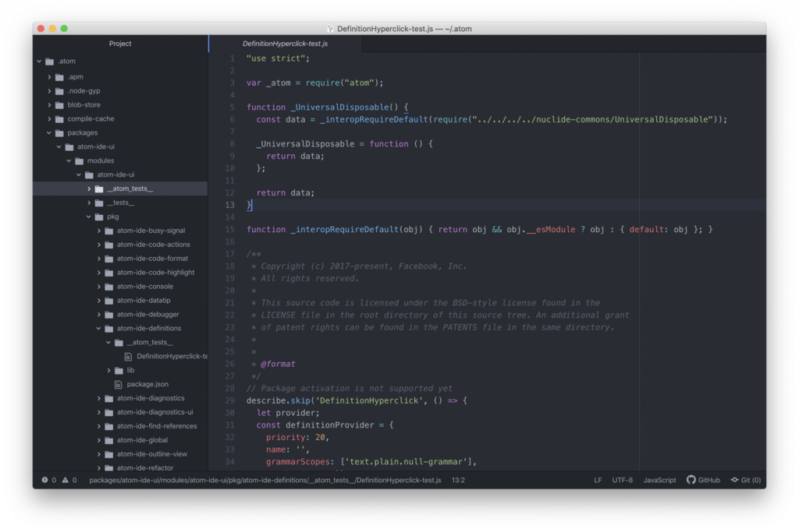
Atom es un editor relativamente nuevo que salió en el 2014 y ha ganado un enorme impulso desde entonces.
Se trata de uno de los mejores editores de HTML, gratuito y de código abierto, y fue desarrollado por el
equipo de GitHub. Atom usa una licencia de software libre para su paquete y es mantenida por la
comunidad de GitHub.
Su objetivo es ofrecer una experiencia premium en el editor, y a la vez mantenerlo completamente gratis;
además de flexibilidad para personalizar el software en sí.
características:
Editor de texto de código abierto. El editor completo de Atom es un programa gratuito y de código
abierto y está disponible en GitHub.
Atom soporta el teletipo (Teletype). Esta es una característica importante si quieres colaborar con
otros desarrolladores en tiempo real.
Soporta múltiples paneles. Atom puede dividir la interfaz en muchas ventanas para que puedas
comparar y escribir código lado a lado.
Autocompletado inteligente. Atom te ayuda a escribir tu código de forma más rápida e inteligente con
un autocompletado flexible.
Visual Studio Code
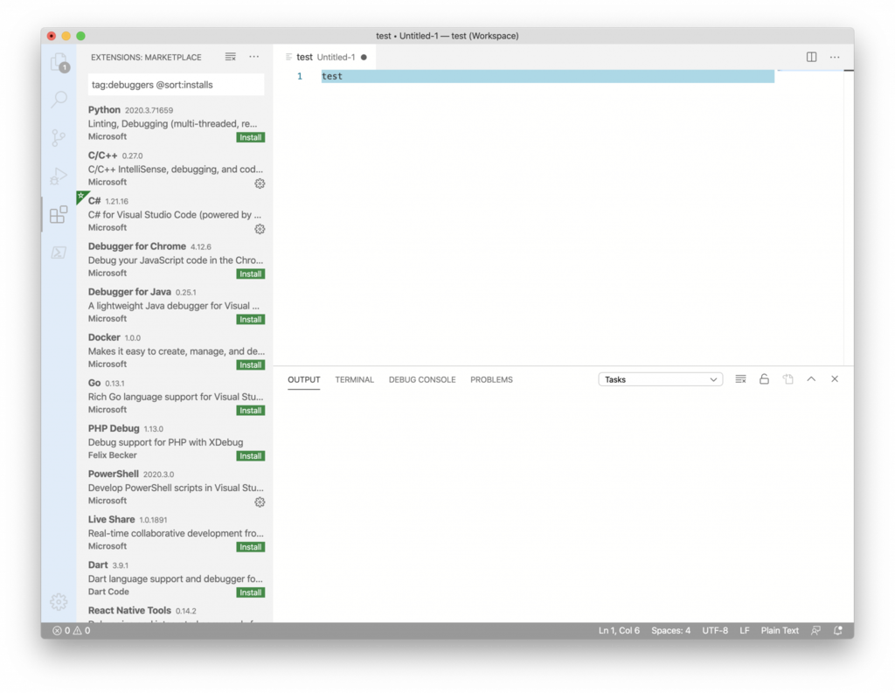
Se destaca por su autocompletado y otras respuestas sintácticas inteligentes. Visual Studio Code es un
programa de múltiples idiomas y plataformas. Su entorno de desarrollo trabaja mano a mano con HTML,
Python y otros lenguajes de programación populares.
También es compatible con Microsoft Azure, lo que facilita la implementación y numerosas extensiones.
características:
El project manager hace que sea fácilmente accesible cambiar entre un proyecto y otro.
Personalización y funciones. Instala extensiones para añadir idiomas, temas, depuradores y más.
El project manager hace que sea fácilmente accesible cambiar entre un proyecto y otro.
Notepad++
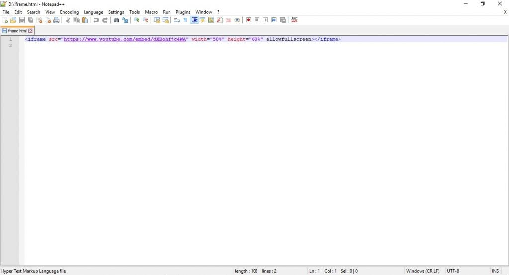
Notepad++ es un editor que fue desarrollado para máquinas basadas en Windows. Los usuarios de Linux
también pueden usarlo a través de Wine. Este editor se distribuye como software libre y su repositorio
también está disponible en GitHub. Al igual que otros proyectos de la comunidad, admite plugins de
terceros.
otepad++ se distingue por su simplicidad, además es súper liviano; incluso hay una versión móvil si la
necesitas. Aquí hay algunos puntos destacados:
características:
La interfaz de Notepad++ es simple, liviana y rápida.
Es compatible con el entorno de programación en varios idiomas, desde ActionScript, CSS hasta Visual
Basic.
100% compatible con Windows, aunque otros sistemas operativos no son compatibles (sin software
adicional).
Sublime Text
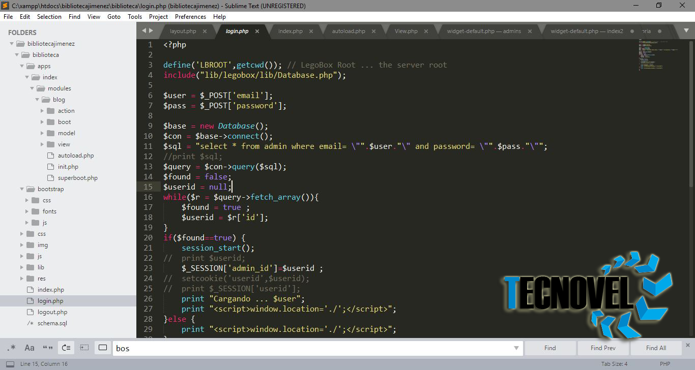
Sublime es otro de los mejores editores HTML que podrás encontrar. Desarrollado por una empresa con sede
en Sydney, este software se encuentra en la categoría de freemium.
Sublime ofrece muy buen soporte para garantizar que el programa se actualice constantemente. Los
usuarios pueden agregar plugins creados por la comunidad o crear los suyos propios. Creemos que usar la
versión gratuita de Sublime es más que suficiente. Sin embargo, si crees que necesitas más funciones,
puede obtener la licencia más adelante.
características:
Sublime es compatible con la API de Python que le permite al plugin expandir su funcionalidad
predeterminada.
Edición simultánea. Puedes realizar cambios en muchas áreas seleccionadas al mismo tiempo.
Sublime está disponible en Windows, OS X y Linux. Los desarrolladores solo necesitan tener una
licencia para usar Sublime en todas las computadoras que tengan.
Adobe Dreamweaver CC
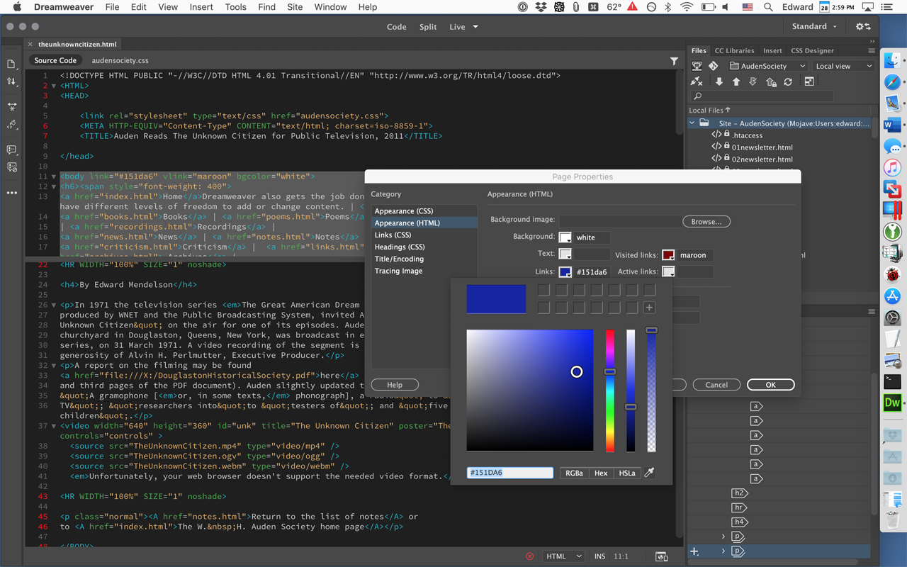
Adobe Dreamweaver CC es una herramienta excelente, potente y versátil. Sirve tanto para el desarrollo de
back-end como de front-end. Como software de código cerrado, Dreamweaver está diseñado para funcionar
dentro del ecosistema de Adobe.
Dreamweaver es uno de los editores que admite tanto el método textual como el WYSIWYG. Por lo tanto, tu
eliges si quieres programar con una presentación visual en vivo o seguir el camino clásico.
características:
Vista previa. De esta manera, los desarrolladores pueden programar mientras previsualizan el
producto final.
Confirmar el código y accesibilidad de la página. Esta característica puede facilitarle a los
desarrolladores seguir las Pautas de accesibilidad de contenido web (WCAG).
Acceso a bibliotecas creativas en la nube. Acceso premium a la abundante oferta de materiales en el
ecosistema de Adobe. Desde colores, palabras, gráficos, capas, caracteres y mucho más.
Para concluir debemos saber que recibir ayuda para escribir código de forma más rápida y eficiente se
está convirtiendo en una necesidad, ahora más que nunca. Tanto si empezaste a programar hace poco como
si eres un experto, creemos que un editor de HTML puede convertirse en el mejor amigo de cualquiera.
También queremos mencionar que a menos que necesites soporte 24/7 y administres el código para una gran
compañía, probablemente no tendrás problemas con un editor gratuito.
Tu primer documento HTML
En este apartado del tutorial se explica cuál es la estructura básica de un documento HTML a través de un
ejemplo sencillo ("ejemplo.html") donde se visualizan dos párrafos. Por ejemplo, en Google Chrome, el
resultado que se espera ver en pantalla será algo parecido a:
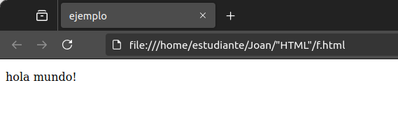
Pasos para crear un documento HTML:
Abrir un editor de texto, como el Bloc de notas de Windows o TextEdit de macOS. También
puedes usar editores de código como Visual Studio Code, Sublime Text o Atom.En la primera línea del archivo, agregar el código especial <!DOCTYPE html>
para declarar el tipo de documento como HTML.Escribimos <html> para indicar que el documento está construido con HTML
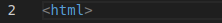
<head> para contener información sobre el sitio (Pero no es visible al
cliente).
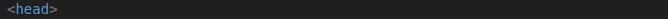
<title> para incluir el título de la página
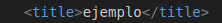
</head> para cerrar la cabecera
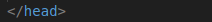
<body> para contener el cuerpo del documento </body> para cerrar el cuerpo del documento
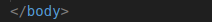
<html> para cerrar el documento
Finalmente, completaremos el código de este primer ejemplo añadiendo:
<p> para crear párrafosEscribimos "lang=en" para especificar, mediante el atributo lang, el idioma del
contenido del elemento "html".Escribimos <meta charset="utf-8"> dentro del elemento "head". Así, se indica la
codificación de caracteres del documento, en esta ocasión UTF-8 (8-bit Unicode Transformation
Format, Formato de Transformación Unicode de 8 bits). Obsérvese que, el elemento "meta" está vacío
(no tiene contenido) y, en consecuencia, no necesita ser cerrado escribiendo </meta>.
Si has seguido los pasos debería de verse así:
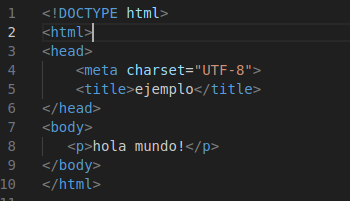
Para mas informaciones puedes ver estos videos:
Las etiquetas
Las etiquetas HTML son el alma de cualquier sitio web, los comandos secretos que transforman texto en
experiencias digitales atractivas y bien estructuradas. Más allá de organizar contenido, estas etiquetas son
clave para destacar en los motores de búsqueda y brindar una navegación fluida.
En este artículo, revelamos el verdadero poder de las etiquetas HTML: e mostraremos cómo usarlas para
mejorar la accesibilidad, impulsar el SEO y llevar la experiencia de tus usuarios a otro nivel. ¡Continúa
leyendo!
¿Que son las Etiquetas en HTML?
Las etiquetas HTML son comandos que le dan instrucciones al navegador sobre cómo debe mostrar el
contenido.
Es por ello que no podemos entender ninguna página web sin las etiquetas HTML, ya que son las que le dan
las órdenes al navegador sobre lo que tiene que hacer.
A diferencia de un lenguaje de programación, HTML es un lenguaje de marcado; es decir, no genera
funciones dinámicas, sino que define cómo se organiza la información en una página web. Aún así, con el
uso de etiquetas HTML, los desarrolladores pueden crear una estructura clara y navegable, desde
secciones principales hasta detalles como atributos específicos.
Para qué sirven las etiquetas HTML
Sirven para estructurar y organizar el contenido de una página web, permitiendo que los navegadores
interpreten y presenten cada elemento correctamente para el usuario final.
Cada etiqueta HTML cumple una función específica, desde indicar títulos y párrafos hasta incorporar
imágenes, enlaces y formularios. Estas etiquetas definen visualmente el contenido (por ejemplo,
<h1> para títulos principales o <p> para párrafos) y también especifican funciones internas
del documento, como metadatos y enlaces a recursos externos (<meta> , <link>).
Ejemplos de uso de etiquetas HTML
Estructura básica de una página: organizan el contenido principal, los metadatos y el cuerpo visible
del sitio.
Texto y formato: ayudan a estructurar los textos, como destacar palabras importantes en negritas o
cursiva.
Interactividad: permiten añadir enlaces de navegación y recolectar datos de usuario en formularios
Cómo funcionan las etiquetas de HTML
CGracias a las etiquetas de HTML, la construcción de una página puede ser entendida por máquinas y
humanos, pues el código se basa en la descripción de los elementos que la componen. Lo mejor de todo es
que son accesibles y sencillas de aprender, por lo que no necesitas ser un experto o experta en
desarrollo web para insertar imágenes, videos, enlaces, documentos o dar un formato enriquecido a tus
contenidos.
La primera parte encerrada entre signos es la apertura de la etiqueta, y la segunda, que cuenta con una
diagonal, indica el cierre de esa etiqueta. Esto sirve para indicarle al navegador la porción de texto
que deberá modificarse por dicha indicación. Si se trata de una imagen, un salto de línea o video no es
necesario señalar el cierre.
Partes básicas de las etiquetas HTML
Para comprender, a grandes rasgos, lo que son las etiquetas HTML te mostramos cuáles son sus partes
básicas y para qué sirve cada una:
elemento
Es el nombre de la etiqueta, generalmente pareada (es decir: con apertura y cierre, como lo acabamos de
mencionar), y aparece entre los signos de apertura. Por ejemplo: <title> Partes básicas de
etiquetas HTML</title>, que indica que esa frase es un título.
contenido
Es el texto que modifica las etiquetas, lo que aparece entre las etiquetas y atributos.
Variable
Es la característica del atributo de una etiqueta: color, tamaño, tipo de letra, y se escribe
generalmente entrecomillado después del signo de igual. En el ejemplo de atributo, la variable es Arial.
Los atributos
los atributos HTML, esos poderosos modificadores que proporcionan información adicional a los elementos web.
Desde personalizar imágenes con el atributo «src» hasta dar estilo a listas y tablas con «class» y «style»,
te sumergirás en ejemplos cautivadores que desvelarán su potencial.
¿Que son Atributos en HTML?
Los atributos son elementos que permiten incorporar características adicionales al agregarlas a las
etiquetas HTML para modificar su comportamiento o apariencia. Son como pequeños ajustes que le permiten
personalizar cómo se muestra un elemento en la página web.Los atributos se colocan en las etiquetas HTML
y generalmente constan de un nombre y un valor, separados por un signo igual (=).
Por ejemplo:
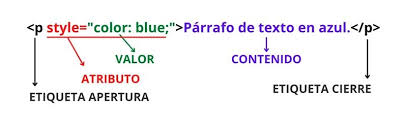
Se puede observar el atributo "style" dando el color azul al párrafo
¿Para que sirven los atributos HTML?
Como dijimos en el punto anterior, los atributos HTML sirven para modificar el comportamiento o la
apariencia de los elementos HTML.
Aquí dejo algunas de las principales funciones o modificaciones que se pueden llevar a cabo con
atributos:
Estilo y presentación: Los atributos como style permiten aplicar estilos CSS directamente a
elementos HTML, controlando aspectos visuales como el color, tamaño de fuente, márgenes, etc. Como
el ejemplo ilustrativo anterior.
Enlaces: Este atributo permite crear enlaces a otras páginas o recursos. Como por ejemplo, la
etiqueta <a> utiliza el atributo href para especificar la ubicacion al que se dirigirá.
Imágenes: Insertar imágenes y definir sus propiedades. Atributos como src en elementos de imagen
(<img>) indican la ubicación de la imagen.
Atributos de accesibilidad: Algunos atributos como alt en elementos de imagen son esenciales para
proporcionar texto alternativo. Es útil ya que los motores de búsqueda utilizan este atributo para
identificar el contenido de la imagen o para mejorar la accesibilidad para usuarios con
discapacidades visuales.
Reglas fundamentales en HTML
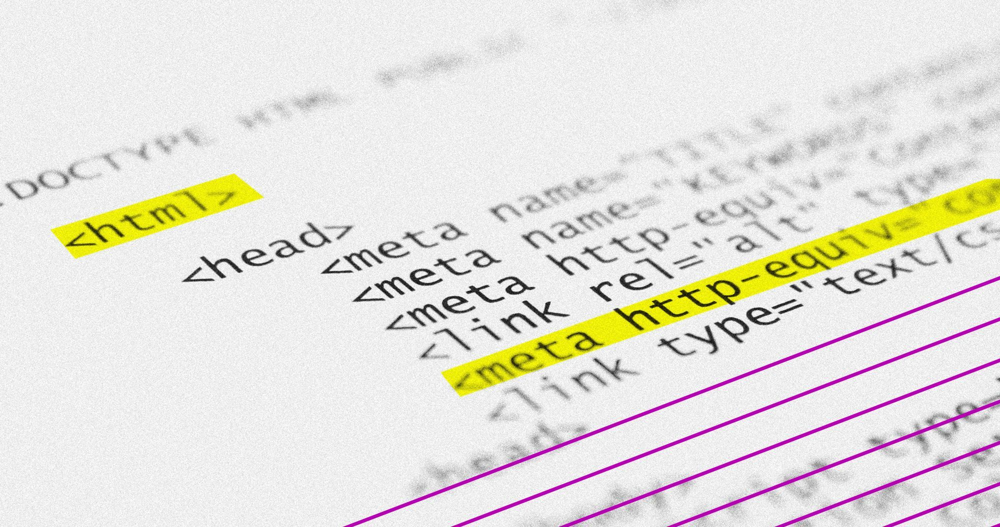
Estas son algunas reglas fundamentales de Html:
No poner acentos: Escribiremos todas las palabras sin acento, aunque los tengan.
Etiquetas: Las etiquetas HTML comienzan con un símbolo < y terminan con un símbolo />. Las
etiquetas no distinguen entre mayúsculas y minúsculas, pero se recomienda escribirlas en minúsculas para
mayor coherencia y legibilidad.
Atributos: Los atributos se incluyen en la etiqueta de apertura de un elemento, nunca en la de cierre.
Se recomienda entrecomillar todos los valores de atributo para hacer que el código sea más consistente y
comprensible.
Sangría: Todos los documentos HTML deben utilizar dos espacios para la sangría
Espacios en blanco: No debe haber ningún espacio en blanco al final del documento.
Sintaxis: Se debe utilizar la sintaxis HTML5.
Estructura: La estructura básica de un documento HTML incluye las etiquetas <html>, <head> y
<body>. <html> envuelve todo el contenido de la página, <head> contiene metadatos y
enlaces a hojas de estilo o scripts, y <body> contiene el contenido visible de la página.
Escribir nombres de archivos:
Etiquetas para hacer un documento en HTML
Estas son las etiquetas para hacer un documento en Html:
<body>: Indica la parte del cuerpo del contenido de un documento HTML. Es una etiqueta esencial
para cualquier documento ya que indica donde empieza el contenido visible del documento.
< head>: La parte superior del documento HTML, es donde podremos indicar los metadatos: título del
documento, hojas de estilos, javaScript, CSS…
<div>: Un elemento que es usado mayoritariamente para agrupar otros elementos y actuar como
plantilla de otros controles. La etiqueta <div> nos ayuda a estructurar el documento en secciones.
<a>: Es una etiqueta que nos ayuda a poder crear un enlace a una página web. El atributo principal
de la etiqueta HTML es href, donde pondremos el enlace al que queremos conectar. Otro atributo muy usado
es target, el cual nos sirve para indicar si el enlace se abrirá en una nueva ventana o en la misma.
<strong>: Si tienes mucho texto, es importante poder dar énfasis a una parte en concreto, con la
etiqueta strong lo podemos hacer.
<br>: Con esta etiqueta HTML le podemos decir al navegador que viene un salto de línea. Nos sirve
para hacer el texto más leíble.
<(h1-h6)>: Hay diferentes niveles de títulos, del 1 al 6. Las etiquetas <H + número> nos
permiten indicar la importancia del título y para estructurar el contenido, de esta forma ayudamos a los
bots a entender la importancia del contenido.
<img>: Usamos la etiqueta IMG para mostrar imágenes dentro del contenido. Necesita el atributo src
para funcionar, ya que será donde indicaremos desde donde tiene que mostrar la imagen.
<(ol-li/ul-li)>: Las etiquetas OL y LI nos sirven para crear listas, OL para listas ordenadas y UL
para listas sin orden. Dentro de las listas, los elementos se identifican con la etiqueta LI.
<p>: Etiqueta que nos sirve para agrupar texto dentro de un parágrafo. El propósito es poder hacer
el contenido más fácil de leer y organizado.